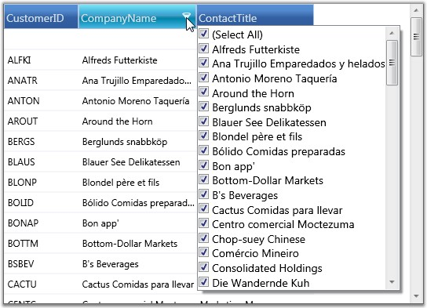
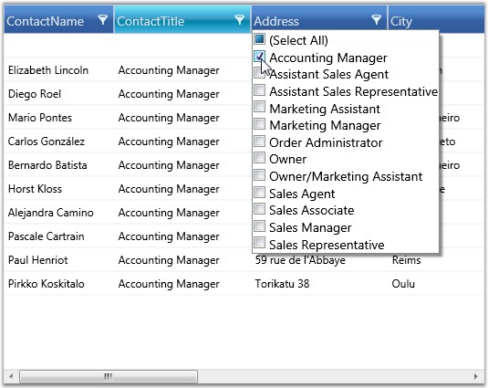

Essential Grid allows you to restrict the display of records using a mechanism called Filters. A filter lets you to extract a subset of records that meet certain filter criteria. Filters can be applied to one or more columns.
Functions
· Apply Filters
· Enable/Disable Filters
· Filters Collection
Now, let us see these functionalities one-by-one in detail.
Apply Filters
When this feature is enabled, every column header displays a filter icon. Clicking this icon opens a drop-down list, which is actually a Checked List Box control that holds the possible values for the column clicked. To filter the data by a specific value, just select the check box that prefixes the desired value. This will then reload the grid with only those records, which has the selected value on the particular column. The filter drop-down also provides a SelectAll option either to select or deselect all the values at once.
Enable/Disable Filters
It is possible to turn on and turn off the filters in specific column or in all the columns as a whole. To enable filters in all the columns, the Grid.ShowFilters must be set to true. To turn on the filters for specific column, simply set its AllowFilter property to true.
The following are the code snippets that illustrate this property:
Enable Filter for the Whole Grid
|
[XAML]
<syncfusion:GridDataControl x:Name="dataGrid" AutoPopulateColumns="True" AutoPopulateRelations="False" ItemsSource="{StaticResource customerSource}" ShowFilters="True" /> |
Enable Filter for Single Column
|
[XAML]
<syncfusion:GridDataControl x:Name="dataGrid" AutoPopulateColumns="False" AutoPopulateRelations="False" ItemsSource="{StaticResource customerSource}"> <syncfusion:GridDataControl.VisibleColumns> <syncfusion:GridDataVisibleColumn MappingName="CustomerID" HeaderText="CustomerID"/> <syncfusion:GridDataVisibleColumn MappingName="CompanyName" HeaderText="CompanyName" AllowFilter="True" /> <syncfusion:GridDataVisibleColumn MappingName="ContactTitle" HeaderText="ContactTitle" /> </syncfusion:GridDataControl.VisibleColumns> </syncfusion:GridDataControl> |
The following image shows a GridData control with filter feature enabled for "CompanyName" column:

Figure 172: Grid Displaying the filter drop-down of a column
CompanyName in GridData control is now enabled with filtering feature.
Here is an example code that enables filter on all the columns:
|
[XAML]
<syncfusion:GridDataControl x:Name="dataGrid" AutoPopulateColumns="True" AutoPopulateRelations="False" ItemsSource="{StaticResource customerSource}" ShowFilters="True" /> |
The following image illustrates the columns, filtered against the criteria ContactTitle=’Accounting Manager'.

Figure 173: Selective enabling of filters
Filters Collection
All the filters for a particular column are managed by VisibleColumn.Filters property. You can apply or clear any number of filters by adding or removing the appropriate entries from this collection.
The following code illustrates the addition of a filter to the column 'ContactTitle'.
|
[XAML]
<syncfusion:GridDataVisibleColumn MappingName="ContactTitle" HeaderText="ContactTitle"> <syncfusion:GridDataVisibleColumn.Filters> <syncfusion:GridDataFilterPredicate FilterType="StartsWith" FilterValue="Sales" IsCaseSensitive="False" /> </syncfusion:GridDataVisibleColumn.Filters> </<syncfusion:GridDataVisibleColumn> |